Telesales nhập lead đủ năm mục trên máy tính và thấy ngay kết quả kiểm trùng: không trùng, đã có đầu chủ, hay căn đã có hàng mở
Vì sao làm
Màn P0 (L1–L3); luật 19–21 Số đo hai tuần thử gần nhất (Tham chiếu §11): Số lead trùng bị chặn — ngưỡng số đặt trước khi thử.
Đã hứa
- AC-1 — Given lõi của `packages/core`, When kiểm một lead, Then lead hợp lệ khi và chỉ khi đủ năm mục đúng dạng: số chủ
- AC-2 — Given hai dữ kiện «hàng mở trên căn» và «đầu chủ của chủ nhà», When lõi quyết kết quả, Then đúng bảng bốn ô:
- AC-3 — Given sàn đã nạp hàng và chủ nhà của bộ mẫu, When telesales nhập lead L-01 của bộ mẫu (căn trên hàng đang mở) qua
- AC-4 — Given sàn đã nạp bộ mẫu, When telesales nhập lead L-02 (số của chủ nhà CN-01 đã có đầu chủ) trên một căn chưa có
- AC-5 — Given sàn đã nạp bộ mẫu, When telesales nhập một lead không khớp số hay căn nào (gồm lead chỉ biết toà), Then kết
- AC-6 — Given hai sàn, sàn B có hàng mở trên cùng toà, cùng căn và chủ nhà cùng số với lead của sàn A, When telesales sàn
- AC-7 — Given telesales vừa nhập lead (mọi kết quả), When đọc bản của telesales (lúc tạo và `GET /api/v1/leads/{id}`),
- AC-8 — Given lead căn trùng, When người nhập bấm «Bỏ lead này», Then dòng lead còn nguyên, ghi người bỏ và lúc bỏ; lần
- AC-9 — Given vai trong sàn, When gửi lead, Then telesales, đầu chủ, trưởng nhóm gửi được; đầu khách và quản trị sàn
- AC-10 — Given màn `/leads/new` trên máy tính đang chạy, When telesales điền năm ô và gửi, Then thấy năm ô với nhãn của
Thiết kế
docs/superpowers/specs/2026-10-31-o-nhan-lead-design.md
Quyết định
- 2026-10-31 · Máy · approach · S1 — Đã tra tri thức: Telesales nhập lead đủ năm mục trên máy tính và thấy ngay kết quả kiểm trùng: không trùng, đã có đầu chủ, hay căn đã có hàng mởKho đã khai tri_thuc — bước thiết kế tra trang trước khi chọn.
- 2026-10-31 · Máy · approach · S1 — Lead là một bản ghi riêng (bảng leads), chưa là hàng; lead thành hàng khi đầu chủ nhận ở hàng sau.Trục ai thấy hàng cho người tạo hàng đọc được hàng ấy, nên telesales tạo hàng thì thấy hàng — trái luật 21; đầu chủ nhận lại không đọc được hàng «Chỉ tôi» của telesales.
- 2026-10-31 · Máy · approach · S1 — Kiểm trùng chia hai lớp: hàm cơ sở dữ liệu app.lead_dedupe_facts chỉ chở dữ kiện, luật quyết kết quả nằm ở packages/core/src/dedupe.Bản đồ kho đặt kiểm trùng ở lõi luật nghiệp vụ; số chủ là cột vai API không đọc được nên phép so số phải chạy trong hàm security definer.
- 2026-10-31 · Máy · approach · S1 — Khi căn có hàng mở và chủ nhà đã có đầu chủ cùng lúc, kết quả là căn trùng (tin bổ sung cho đầu chủ của hàng).Lead thường trên căn đã có hàng mở sẽ đẻ ra hàng mở thứ hai trên một căn khi thành hàng.
- 2026-10-31 · Máy · approach · S1 — «Hàng mở» là hàng ở Chưa đủ để rao, Đang bán, Đang giao dịch hay Tạm ngừng; Đã bán và Ngừng hẳn không tính.Bảng chuyển trạng thái coi hai nấc ấy là nấc cuối, mở lại là hàng mới.
- 2026-10-31 · Máy · approach · S1 — Vai nhập được lead là vai có nút «+ Lead» ở bảng vai của lõi: telesales, đầu chủ, trưởng nhóm; vai khác nhận 403.Bảng vai của vỏ đã quyết ai có nút + Lead; lối API theo cùng một bảng.
- 2026-10-31 · Máy · approach · S1 — Bản trả cho telesales không mang số chủ ở dạng nào; vai API không được đọc cột leads.owner_phone.Đã chốt telesales không thấy lại số chủ sau khi gửi, theo lớp trường.
- 2026-10-31 · Máy · approach · S1 — Gửi lead cần mạng; lead không vào hàng đợi ghi trên máy của bộ đồng bộ.Kiểm trùng cần số chủ và hàng của người khác, máy của telesales không giữ hai thứ ấy.
- 2026-10-31 · Máy · approach · S1 — Hỏi-1: nhu cầu chọn một trong «Bán · Cho thuê · Cả hai» (sale, lease, sale_or_lease), giá là giá chủ muốn cho nhu cầu ấy.Tham chiếu chỉ nói «nhu cầu» là mục bắt buộc, không nói giá trị; đây là nghĩa sản phẩm người dùng thấy.
- 2026-10-31 · Máy · approach · S1 — Hỏi-2: thời gian muốn ra hàng chọn một trong bốn nấc «Ngay · Trong 1 tháng · 1–3 tháng · Chưa định».Telesales nghe chủ nói «tầm tháng sau» chứ ít khi nghe một ngày; dạng mục chưa có ở Tham chiếu.
- 2026-10-31 · Máy · approach · S1 — Hỏi-3: telesales thấy tên đầu chủ nhận lead trong kết quả kiểm trùng.Luật 21 cho telesales thấy kết quả, không nói kết quả có tên người nhận hay không.
- 2026-10-31 · Máy · descope · S1 — Không dựng cột phải của L1 (lead đã nhập + bốn nấc, khối list-11) ở vòng này; khối form-2 dựng trọn.Bốn nấc và danh sách lead là câu giao của hàng 27, vùng apps/web/src/app/(app)/leads/mine.
- 2026-10-31 · Máy · descope · S1 — Lead trùng số với một lead khác đang chờ chia không có kết quả riêng ở vòng này — ra «không trùng».Lead chờ chia chưa có người nhận; người nhận do hàng 25 chia, hàng ấy mở rộng vế «lead trước cùng số» của hàm dữ kiện.
- 2026-10-31 · Máy · approach · S1 — Chạy design-pass: bản mẫu bấm được ở /proto/o-nhan-lead dùng chính biểu mẫu của màn, máy chủ giả trả ba kết quả.Màn chạm UI; Cổng Phạm vi duyệt UI trên bản bấm được.
- 2026-10-31 · Máy · approach · S1 — Hỏi-4: lead là một bản ghi riêng (bảng leads) tới khi đầu chủ nhận, không là hàng ở nấc đầu; Tham chiếu §4 sửa câu «Lead là hàng ở nấc đầu» cùng PR.Tạo hàng bằng tài khoản telesales trái luật 21; hai lối còn sống — ghi người tạo là người nhận, hay thêm ngoại lệ telesales vào trục ai thấy hàng — đều đổi luật đã ký của hàng 12, nên là đánh đổi của người.
- 2026-10-31 · Máy · approach · S1 — Hỏi-5: lead trùng số với một lead khác đang chờ chia ra «Không trùng» ở hàng này; hàng 25 chia lead cùng số cho cùng một người; số đo «lead trùng bị chặn» chưa đếm loại này tới hàng 25.Lead đang chờ chia chưa có người nhận nên không thành «đã có đầu chủ»; thêm kết quả thứ tư là đổi luật 20 — đánh đổi của người.
- 2026-10-31 · Máy · approach · S1 — Vai nhập được lead đúng bằng vai có nút «+ Lead» ở bảng nút theo vai của lõi (telesales, đầu chủ, trưởng nhóm); quản trị sàn và đầu khách nhận 403.Bảng nút theo vai của vỏ (hàng 53, đã ký) đã quyết vai nào có «+ Lead»: quản trị sàn chỉ có Nhập Excel, đầu khách không có nút nào.
- 2026-10-31 · Máy · approach · S1 — Hỏi-6: hàng 24 chỉ nhận lead căn thuộc dự án có trong danh mục; nhà phố và nhà ngoài dự án là một hàng mới của lộ trình (đối tượng bất động sản theo địa chỉ, kiểm trùng theo địa chỉ chuẩn hoá).Đối tượng của sản phẩm hiện chỉ có dự án → toà → căn (Tham chiếu §4) và hàng bắt buộc có toà; nhà phố ngoài dự án chưa có chỗ trong mô hình, thêm vào là đổi lõi hàng và danh mục, không phải một ô của màn — đánh đổi phạm vi của người.
- 2026-10-31 · Máy · approach · S1 — Hỏi-6: hàng 24 chỉ nhận lead loại hình căn hộ trong dự án có danh mục — theo RESO là PropertyType Residential, PropertySubType Condominium; nhà phố (Townhouse), nhà riêng (SingleFamilyResidence) và mọi loại hình khác là hàng mới của lộ trình, kiểm trùng theo địa chỉ chuẩn hoá.Đối tượng của sản phẩm hiện chỉ có dự án → toà → căn (Tham chiếu §4), hàng bắt buộc có toà; RESO tách loại hình bằng PropertyType/PropertySubType và không có thực thể «dự án» — gần nhất là SubdivisionName, nên «dự án» là đặc trưng Việt Nam đặt tên riêng (projectName) như AGENTS.md cho phép.
- 2026-10-31 · Người (Manh Phan) · approach · S1 — Hỏi-6: hàng 24 chỉ nhận lead căn hộ (RESO PropertyType Residential, PropertySubType Condominium) thuộc một khu có danh mục (RESO SubdivisionName); loại hình khác là hàng mới. Hồ sơ không dùng chữ «dự án».Chủ kho 31/10: «dự án» là từ gọi chung, không chuẩn hoá, đổi theo RESO 2.1; RESO DD 2.1 không có trường project, khu chứa căn là SubdivisionName («A neighborhood, community, complex or builder tract»).
- 2026-10-31 · Người (Manh Phan) · revisit · gate1 — Chủ kho duyệt Cổng Phạm vi kèm lời: «những hiểu đây là phần nợ cần giải quyết các loại hình bất động sản khác, vì nếu không giải thì sẽ không thể triển khai được. Báo với Gíam sát đưa phần này vào hạng mục và lập lộ trình bổ sung cho nó.»Hỏi-6 duyệt theo khuyến nghị: hàng 24 chỉ nhận căn hộ thuộc khu có danh mục; loại hình khác là nợ chặn triển khai, giám sát đưa vào hạng mục và lộ trình bổ sung.
- 2026-10-31 · Người · seal · gate1 —
- 2026-10-31 · Máy · approach · S2 — Bộ kiểm API nạp hàng, chủ nhà và đầu chủ của bộ mẫu hàng 5 qua đường ghi thật (tạo hàng, đổi trạng thái, gán đầu chủ, đặt chủ nhà), không chèn tay dòng vào bảng.Phản biện đo lường: fixture tự dựng đúng khuôn bên đọc che lỗi của bên ghi; hàm dữ kiện đọc listing_events, listing_agent_assignments, listing_owners do đường ghi thật sinh.
- 2026-10-31 · Người (Manh Phan) · approach · S2 — Chủ kho duyệt kế hoạch thi công (Gate 1.5): «Duyệt kế hoạch».Việc T3 dừng ở Gate 1.5 trước khi viết mã.
- 2026-10-31 · Máy · fix · S3 — Câu kế hoạch về khoá mã căn sửa cho khớp mã: giữ chữ và số, bỏ dấu cách, gạch, chấm, viết hoa; thêm ca kiểm ghim A-12.06 khác B-12.06.Giám sát soát kế hoạch thấy câu «bỏ ký tự không phải chữ số» tự mâu thuẫn và nếu làm theo thì A-12.06 với B-12.06 cùng toà thành một khoá; mã đã giữ chữ, chỉ câu chữ sai.
- 2026-10-31 · Máy · fix · S4-r1 — Sửa hai chỗ đỏ của vòng 1: tiêu điểm về ô số chủ sau khi ô hết khoá (trước gọi khi ô còn khoá nên mất); bộ kiểm bản đồ khuôn chụp cây thêm nhóm o-nhan-lead, sáu chỗ TrangThai và hai ngoại lệ trang tạm. Kèm sửa lối gõ mã rồi bấm gửi ngay: bước gửi chờ tra mã xong thay vì báo thiếu toà.E10 bước «Sau khi gửi thành công: tiêu điểm ở ô số chủ» đỏ; suite ui-lint đỏ vì bảng viết trước của cây thật chưa có nhóm mới (luật 18); lỗi đua lộ ra khi soát lại E10 với ca không trùng.
- 2026-10-31 · Máy · fix · S4-r1 — Sinh tham số vòng 2 bằng --nhan-cay-moi: commit 719e81c là bản sửa có chủ đích của phiên chính sau khi vòng 1 trả REJECT, không phải tác tử chấm ghi vào cây.Phiên commit bản sửa trước khi chạy bước đếm sau lượt chấm, nên lệnh sinh tham số thấy commit mới sau sha đã chấm.
- 2026-10-31 · Máy · fix · S4-r2 — Khoá biểu mẫu ngay từ lúc bấm gửi (cờ ref chặn lần gửi thứ hai), cả trong lượt tra mã căn trước khi gửi; không sửa hai mục ngoài hợp đồng về mã căn cũ khi sửa mã rồi Enter — để chủ kho quyết ở Cổng Bằng chứng.Vòng 2: hai finding trong hợp đồng (AC-10 «Đang gửi: nút khoá») — bản sửa vòng 1 đặt lượt tra mã trước khi khoá nên bấm đúp ra hai lead. So lớp với vòng 1 (tiêu điểm gọi lúc ô còn khoá; bảng chụp cây thiếu nhóm): khác tên lớp — vòng này là hồi quy mất khoá gửi do chính bản sửa, nên chấm tiếp vòng 3.
Bằng chứng
Các eval
| Eval | Tiêu chí | Loại | Verdict | run_id | verified_at |
|---|---|---|---|---|---|
| E1 | AC-1 | test | PASS | minted-o-nhan-lead-E1-r1 | 2026-10-31T15:10:18Z |
| E2 | AC-2 | test | PASS | minted-o-nhan-lead-E2-r1 | 2026-10-31T15:10:18Z |
| E3 | AC-3 | test | PASS | minted-o-nhan-lead-E3-r1 | 2026-10-31T15:10:18Z |
| E4 | AC-4 | test | PASS | minted-o-nhan-lead-E4-r1 | 2026-10-31T15:10:18Z |
| E5 | AC-5 | test | PASS | minted-o-nhan-lead-E5-r1 | 2026-10-31T15:10:18Z |
| E6 | AC-6 | test | PASS | minted-o-nhan-lead-E6-r1 | 2026-10-31T15:10:18Z |
| E7 | AC-7 | test | PASS | minted-o-nhan-lead-E7-r1 | 2026-10-31T15:10:18Z |
| E7b | AC-7 | test | PASS | minted-o-nhan-lead-E7b-r1 | 2026-10-31T15:10:18Z |
| E8 | AC-8 | test | PASS | minted-o-nhan-lead-E8-r1 | 2026-10-31T15:10:18Z |
| E9 | AC-9 | test | PASS | minted-o-nhan-lead-E9-r1 | 2026-10-31T15:10:18Z |
| E10 | AC-10 | ui-check | PASS | E10-verify-20261031-2240 | 2026-10-31T15:32:24Z |
| E11 | AC-10 | script | PASS | minted-o-nhan-lead-E11-r3 | 2026-10-31T15:32:24Z |
Chi tiết từng eval
PASS E1 · test
AC-1: Given lõi của `packages/core`, When kiểm một lead, Then lead hợp lệ khi và chỉ khi đủ năm mục đúng dạng: số chủ
carry-forward tu round 1 — delta khong cham paths cua eval
PASS E2 · test
AC-2: Given hai dữ kiện «hàng mở trên căn» và «đầu chủ của chủ nhà», When lõi quyết kết quả, Then đúng bảng bốn ô:
carry-forward tu round 1 — delta khong cham paths cua eval
PASS E3 · test
AC-3: Given sàn đã nạp hàng và chủ nhà của bộ mẫu, When telesales nhập lead L-01 của bộ mẫu (căn trên hàng đang mở) qua
carry-forward tu round 1 — delta khong cham paths cua eval
PASS E4 · test
AC-4: Given sàn đã nạp bộ mẫu, When telesales nhập lead L-02 (số của chủ nhà CN-01 đã có đầu chủ) trên một căn chưa có
carry-forward tu round 1 — delta khong cham paths cua eval
PASS E5 · test
AC-5: Given sàn đã nạp bộ mẫu, When telesales nhập một lead không khớp số hay căn nào (gồm lead chỉ biết toà), Then kết
carry-forward tu round 1 — delta khong cham paths cua eval
PASS E6 · test
AC-6: Given hai sàn, sàn B có hàng mở trên cùng toà, cùng căn và chủ nhà cùng số với lead của sàn A, When telesales sàn
carry-forward tu round 1 — delta khong cham paths cua eval
PASS E7 · test
AC-7: Given telesales vừa nhập lead (mọi kết quả), When đọc bản của telesales (lúc tạo và `GET /api/v1/leads/{id}`),
carry-forward tu round 1 — delta khong cham paths cua eval
PASS E7b · test
AC-7: Given telesales vừa nhập lead (mọi kết quả), When đọc bản của telesales (lúc tạo và `GET /api/v1/leads/{id}`),
carry-forward tu round 1 — delta khong cham paths cua eval
PASS E8 · test
AC-8: Given lead căn trùng, When người nhập bấm «Bỏ lead này», Then dòng lead còn nguyên, ghi người bỏ và lúc bỏ; lần
carry-forward tu round 1 — delta khong cham paths cua eval
PASS E9 · test
AC-9: Given vai trong sàn, When gửi lead, Then telesales, đầu chủ, trưởng nhóm gửi được; đầu khách và quản trị sàn
carry-forward tu round 1 — delta khong cham paths cua eval
PASS E10 · ui-check
AC-10: Given màn `/leads/new` trên máy tính đang chạy, When telesales điền năm ô và gửi, Then thấy năm ô với nhãn của
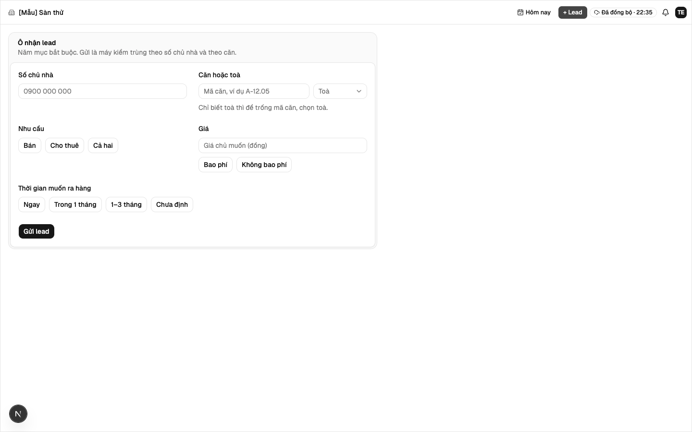

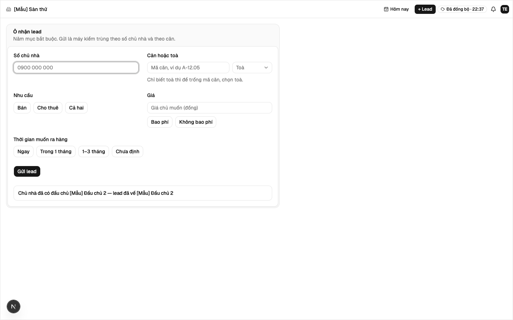
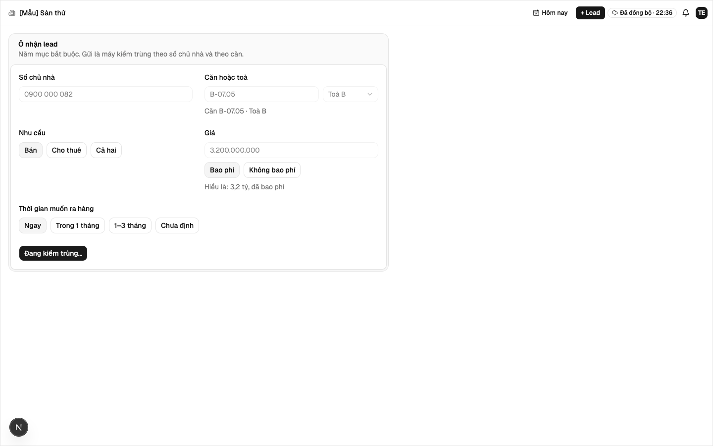


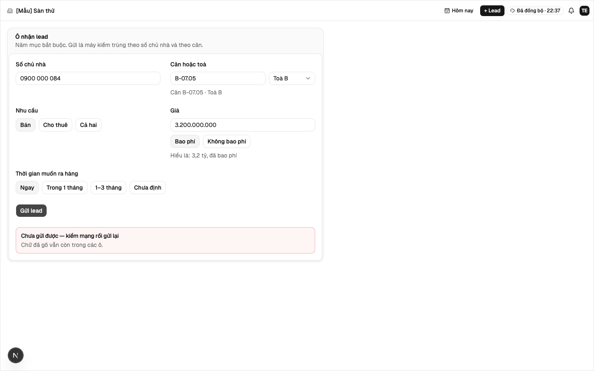

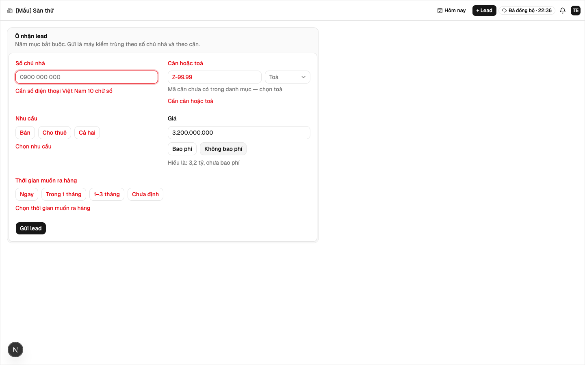
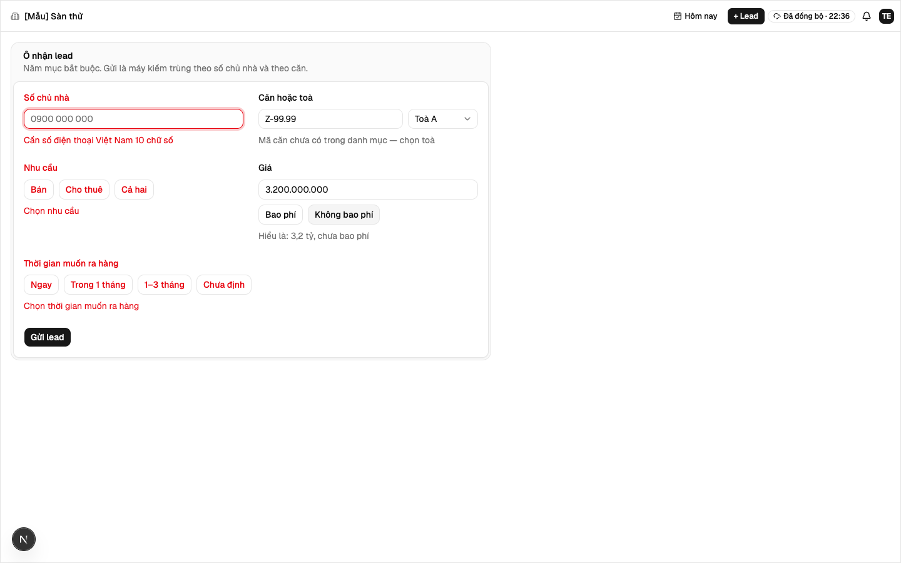

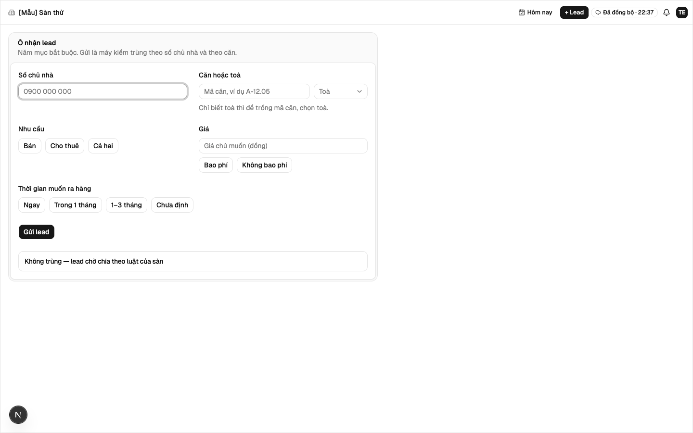

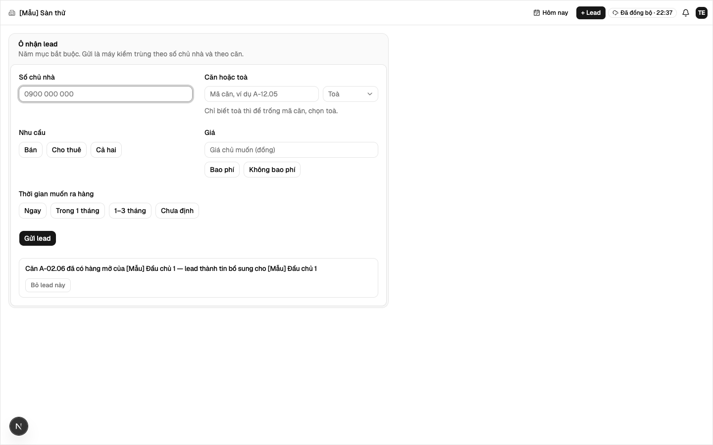
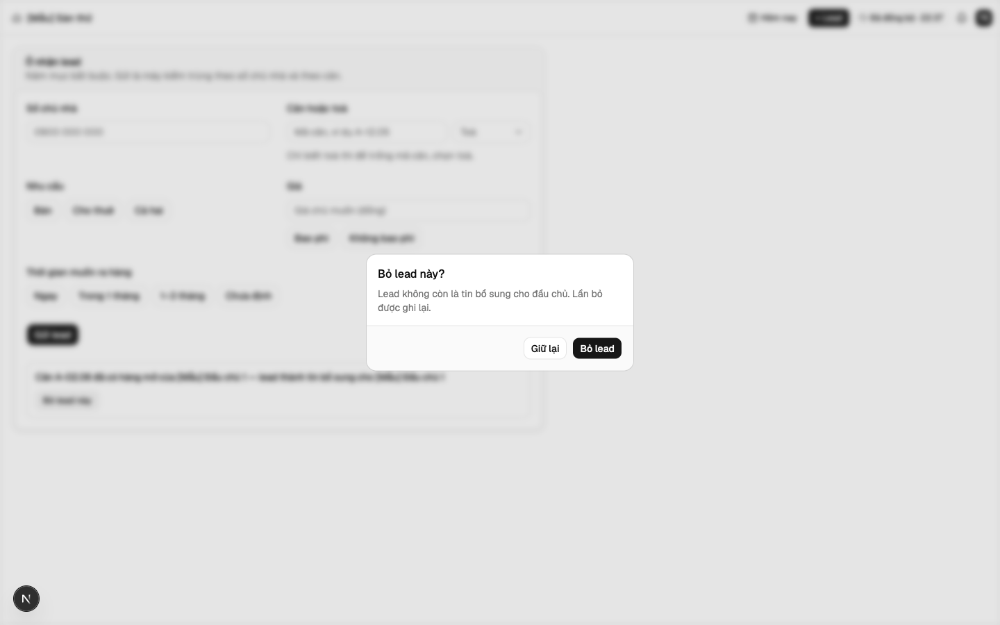

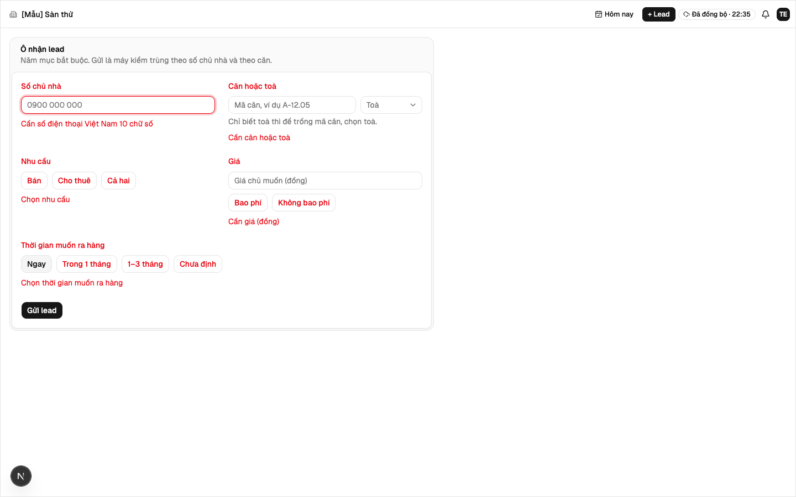
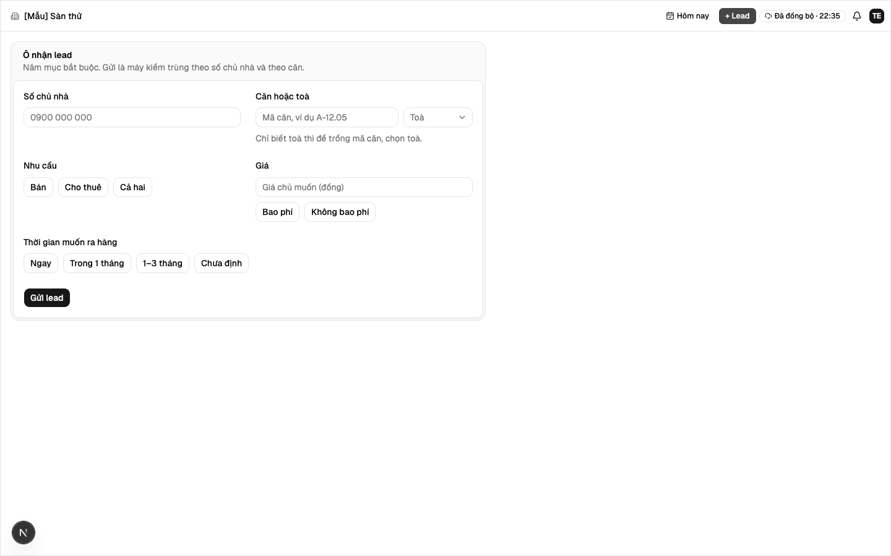
PASS E11 · script
AC-10: Given màn `/leads/new` trên máy tính đang chạy, When telesales điền năm ô và gửi, Then thấy năm ô với nhãn của
chuẩn tầng thiết kế S4 chạy trên cây hiện tại, không mã màu thô trên tệp giao diện vòng chạm
Eval không phân biệt (Analyst)
Vòng verify
- Round 1: bộ eval E1-E11 chạy lần đầu; theo commit 719e81c, vòng 1 sửa tiêu điểm sau gửi, bản đồ khuôn chụp cây có nhóm mới và gửi chờ tra mã.
- Round 2: theo commit 69ae270, vòng 2 sửa khoá gửi từ lúc bấm, kể cả khi đang tra mã căn.
- Round 3: E10 (ui-check), E11 và bảy lệnh suite chạy lại trên commit 69ae270; E1-E9 mang từ round 1 vì delta không chạm paths của eval; verified_at của round 3 suy từ mã chạy E10 (22:40 giờ địa phương, UTC+7), vì kết quả máy không kèm mốc giờ. Tất cả xanh, verdict PASS.
Tài nguyên
| Khối | Tác tử | Token đầu ra |
|---|---|---|
| S4 round 1 | 17 | 92.879 |
| S4 round 2 | 17 | 60.731 |
| S4 round 3 | 14 | 51.524 |
3 lượt chấm · tổng 205.134 token
Giới hạn và ngoài hợp đồng
- Chia lead theo luật của sàn, hạn nhận 15 phút, hạn gọi 30 phút, báo trưởng nhóm — hàng 25.
- Thông báo lead cho đầu chủ — hàng 26.
- Bốn nấc của lead và danh sách lead đã nhập (cột phải của L1, khối `list-11`), «Sửa số và gửi lại» — hàng 27.
- Lead thành hàng khi đầu chủ nhận; tin bổ sung hiện ở hồ sơ căn — hàng 25, 22, 17.
- Lead trùng số với lead khác đang chờ chia — hàng 25 (Hỏi-5).
- Ô nhận lead trên điện thoại (L4, L5) — P1.
- Mã hoá số chủ trong `leads` — hàng 62 (migration 008).
- Kiểm trùng ở nhập Excel và các cửa vào khác — hàng 64–71 (ADR-0011) dùng lại lõi này.
- Gửi lead khi mất mạng.
- Lead loại hình khác căn hộ thuộc một khu có danh mục (RESO `PropertySubType` khác Condominium: nhà phố, nhà riêng…) — hàng mới của lộ trình (Hỏi-6).
Giao
chưa ghi quan sát production
Giá trị
- Câu hỏi phép đo trả lời: [đề xuất] đã đạt «Telesales nhập lead đủ năm mục trên máy tính và thấy ngay kết quả kiểm trùng: không trùng, đã có đầu chủ, hay căn đã có hàng mở» chưa? — chưa đo
- Kết quả nào là SỐNG: [đề xuất] Telesales nhập lead đủ năm mục trên máy tính và thấy ngay kết quả kiểm trùng: không trùng, đã có đầu chủ, hay căn đã có hàng mở — chưa đo
- Kết quả nào là CHẾT: [đề xuất] chưa đạt «Telesales nhập lead đủ năm mục trên máy tính và thấy ngay kết quả kiểm trùng: không trùng, đã có đầu chủ, hay căn đã có hàng mở» khi hết timebox — chưa đo
- Timebox: … — chưa đo